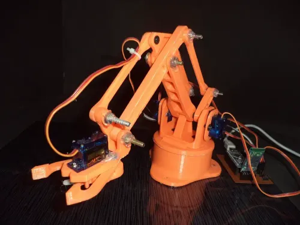

Yash Wathrey
Hello I'm Yash
I'm a Web Developer with a passion for building functional, scalable, and user-friendly solutions. My expertise covers Web Development, Python, SQL, Data Analytics, and Power BI, giving me the ability to approach projects with both creativity and problem solving. I enjoy combining front-end design with backend logic and data to create solutions that are practical, reliable, and impactful. In Web Development, I work with HTML, CSS, JavaScript, and frameworks to create responsive and modern websites. My focus is on delivering clean interfaces, smooth performance, and an engaging user experience. Alongside this, I have strong skills in Python, where I work on backend development, automation, and problem solving. One of my key strengths is OpenCV, which I use for computer vision, object detection, and image processing projects. This allows me to merge software with real-world applications, making my work innovative and useful. I also bring in SQL expertise, ensuring that databases are well structured, optimized, and capable of handling data flows efficiently to support web and analytics solutions. Beyond development, I am skilled in Data Analytics and Power BI, which I use to extract insights and present them in meaningful ways. With data analytics, I enjoy exploring datasets to identify trends and patterns that help drive smarter decision making. Using Power BI, I create interactive dashboards and clear visualizations that turn complex data into easy-to-understand stories for stakeholders. Together, these skills allow me to bridge web technologies with data-driven solutions. Outside of technology, I am passionate about music and playing guitar, which keeps me creative and balanced. I am always eager to learn new tools, take on challenges, and collaborate on projects that make a real-world impact while helping me grow as a professional.
Projects
Finger Counter using OpenCV

A computer vision project utilizing OpenCV and a laptop camera to detect and count fingers in real time, showcasing an efficient, hands-free interface for interaction and control.
Hand Gesture Controlled Robotic Arm
A robotic arm using Arduino, Python, and OpenCV for precise control and object interaction, showcasing automation and hands-on robotics learning.
Maze solving Robot

The Maze Solving Robot is an autonomous system that uses advanced algorithms and sensors to efficiently navigate and solve complex mazes in real-time.
Smart Security Cam
A motion-activated security system using ESP32-CAM and IR sensor to send instant Telegram alerts with a live video stream link.
Services
Web Development
Designing responsive, user-friendly websites using HTML, CSS, JavaScript, and modern frameworks to deliver seamless digital experiences.
Data Analytics
Analyzing datasets and building insightful dashboards using Python, SQL, NumPy, Pandas, scikit-learn, and Power BI.
Python Developer
Developing APIs, processing data, integrating databases, and building machine learning models using Python, NumPy, Pandas, scikit-learn, and OpenCV.